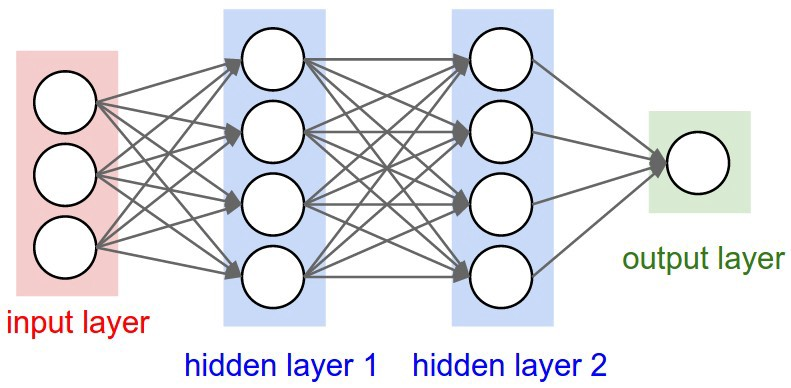

AI in Art summary
Images generated using AI technology have been circulating relatively widely Since Google’s pattern finding software DeepDream roared onto the scene in 2015, the field was still young, and the artworks produced via AI were neither aesthetically nor conceptually rich enough to hold the attention of the art world for long. But after the heavyweight auction house announced it was ready to sell this latest work, the mysterious portrait—and the even more mysterious algorithm behind it—were cast by many in the media as the new standard bearers for the genre.
There is, however, three men behind the curtain. The algorithm responsible for the portrait was developed by a French art collective called Obvious, which created its AI artist using a model called a GAN, short for “generative adversarial network.”
GANs entered the AI conversation in 2014 when researcher Ian Goodfellow published an article theorizing that they represented the next step in the evolution of neural networks: the interconnected layers of processing nodes, modeled loosely on the human brain, that have driven many recent developments in artificial intelligence. The concept of GANs captured people’s attention partly because, unlike the repetitious results produced by Google DeepDream all of which were simply pre-existing images that appeared to be run through what our critic Ben Davis described as the same “psychedelic Instagram filter”—GANs could be trained to produce completely new, and dramatically different, images.
Understanding the process
The method is pretty simple, a linear algebra or a math background is not necessary to understand it. What to understand is a term called neural network which again is actually a really simple concept. Just like any other program a neural networks goal is to transform input data into output data. so for example you could create a neural network that transforms a picture into a number for example the number of apples in the picture but the structure of a neural network is very different from most other programs.
A neural network is structured in layers of what are called neurons and each of these neurons has a specific purpose to convert input into output in some specific ways. so for example you could have some nerve which takes in two numbers and outputs their sum or an average neuron or much more complicated function.
These neurons can be arranged in layers, the first layer is called the input layer; it's where the initial data comes into the photo, the text, etc. The final layer is the output layer which is where you output what the user is looking for. the number of apples or is there an apple etc.
In between these layers there are what are called hidden layers which transform the data into some kind of in between phase. In terms of connecting these neurons we can make a few assumptions based on the problem that we're solving. The assumptions are technically that it's fully connected feed forward.
what that really means is that every neuron in one layer connects to every neuron in the next but what is connected mean? Essentially it means that the output of one neuron becomes part of the input of a connected neuron waited by some number and what becomes really powerful about neural networks is when you start to play with those weights so usually you define a cost function which is a mathematical representation of how far off the network is from the truth and then you can update the weights connecting neurons in order to minimize this cost function over time thus getting closer and closer to the truth.
For more informative on datasets, Architecture, Configurations and VGG click here
Creating the Image
Using the neural network repo that is an open source on Github , I chose the right number of iterations and the right photo. In this way it's a cool mix of art and AI because the human has to choose what parameters they think will look good which is exactly what I did. I chose a picture of me and emerged it with one of Thota Vaikuntam's paintings. and the result came quite nice. You can even see the texture of the painting in the last picture.